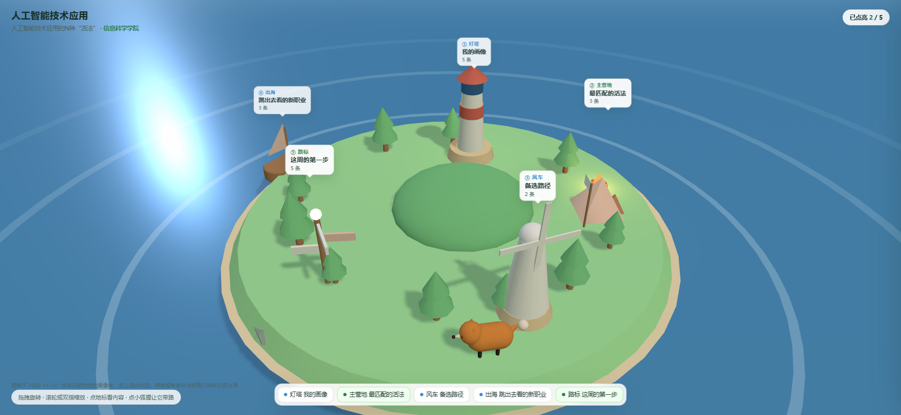
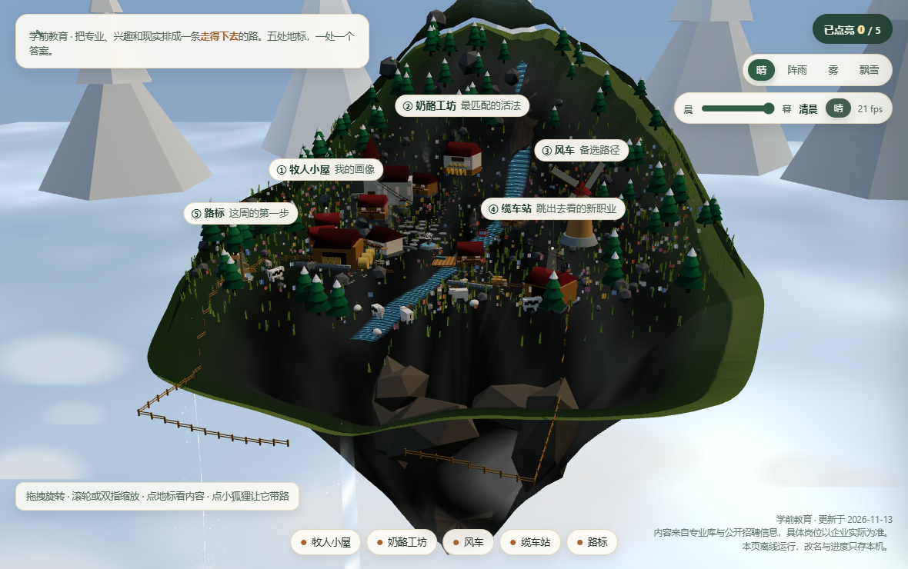
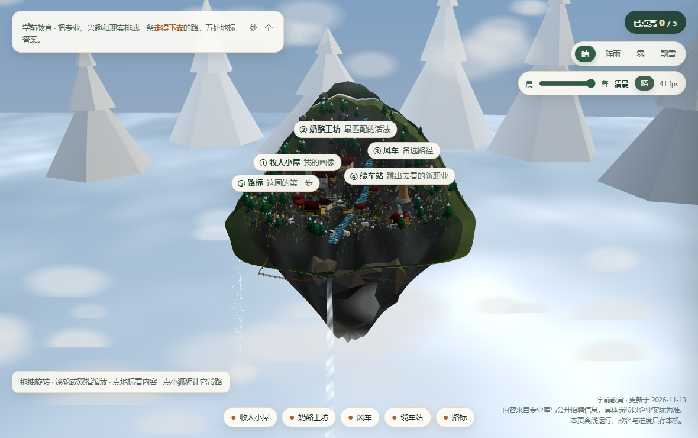

Marvis Skill
专业的 N 种活法
我的职业探索岛
输入一个专业名，生成这个专业的多条职业路径，并渲染成一座可以拖拽旋转、可以点地标、可以缩放的三维漫游页面。
产物是单文件 HTML，双击就开，断网也能用，方便直接发给学生或丢进群里。

全景：悬浮小岛 + 五处地标（我的画像 / 最匹配的活法 / 备选路径 / 跳出去看的新职业 / 这周的第一步）

近景：奶牛、山羊、绵羊、牧羊犬在岛上活动，小狐狸向导负责带路

拉远：断崖、云海与天气切换（晴 / 阵雨 / 雾 / 飘雪）
为什么学生会愿意看完
不是一份表格活法排在岛上，点一处地标看一段结论，比读 PDF 心里有底。
有动物在动小狐狸向导、牧羊犬巡逻，画面不会死。
能自己改名岛名按专业自动生成，学生自己也能改。
断网可用three.js 内联，无任何外链，一个文件就是一整座岛。
安装
把这句口令发给你正在用的 Agent，它会自己拉取、安装、按流程带你做完：
# 复制整句，链接换成你要的仓库
请安装这个 Skill 并帮我制作职业探索岛：https://github.com/mmrlavender/major-ways-to-live
手动看一眼效果
# 需要 Node.js 20+，不用 npm install
node scripts/island.mjs --profile examples/profile-学前教育.json --out 示例-职业探索岛.html
node --test tests/ # 53 项测试全部通过
里面有什么
- 25 个专业数据，共 152 条活法，每条都带角色、技能、入行方式、成本与下一步。
- 23 条新职业 / 8 个方向，专治「我这个专业除了当老师还能干嘛」。
- 四套模板：三维牧场岛（默认）、海洋岛、二维岛屿、海报风单页。
- 三组测试：数据契约、脚本冒烟、文档一致性，改完数据跑一遍就知道有没有写崩。